Captura
A câmera registra a cena diante do usuário.
Tecnologia assistiva feita no Ceará
O Ver+ usa visão computacional para reconhecer pessoas, expressões, objetos e distâncias — e transforma tudo em descrições por áudio, em tempo real.

3 modos de operação
IA multimodal
100% focado em autonomia
LGPD imagens não armazenadas
Simples por fora, inteligente por dentro
Uma experiência pensada para reduzir etapas e entregar a informação certa no momento certo.
A câmera registra a cena diante do usuário.
A inteligência artificial entende pessoas, objetos e contexto.
O resultado é convertido em fala e reproduzido no fone.
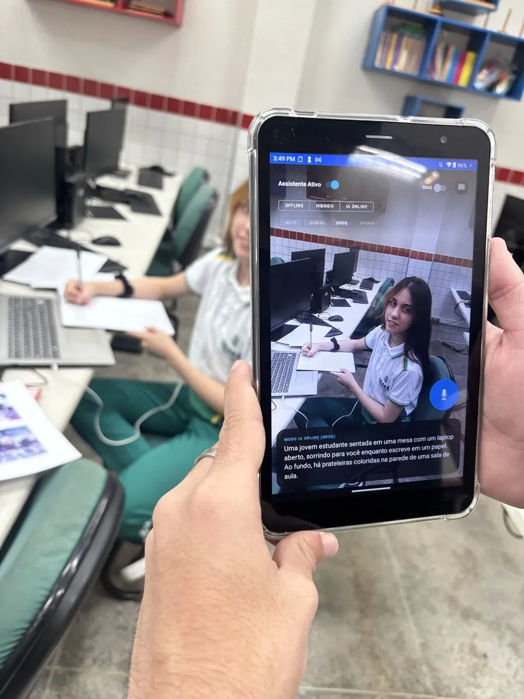
Feito para a vida real
Do aplicativo ao vestível
O conceito físico do Ver+ é um dispositivo retroauricular discreto, conectado ao smartphone e pensado para deixar as mãos livres.
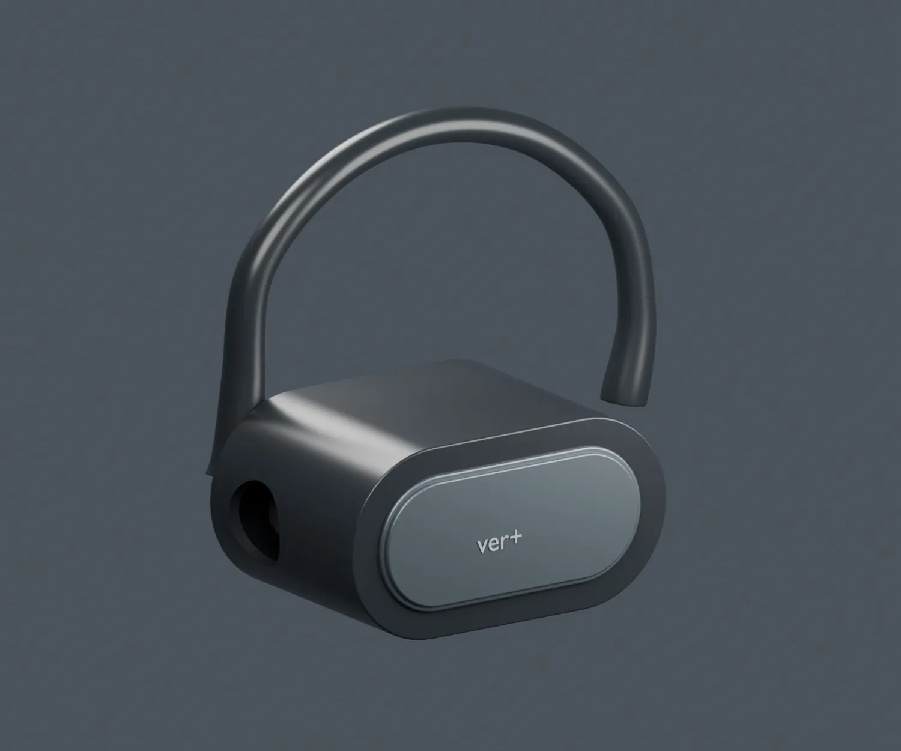
“
Incluir também é transformar informação visual em experiência acessível.
Por que o Ver+ existe
Muitas informações sociais e cotidianas ainda existem apenas no campo visual. O Ver+ aproxima a tecnologia assistiva das pessoas de forma discreta e humana.
Experimente o Ver+
Baixe gratuitamente o Ver+ para Android. Texto e cores funcionam sem internet; descrições de cenas exigem internet e uma chave pessoal de IA configurada no app. O botão acompanha os novos lançamentos.
Esta versão traz descrições mais curtas e naturais, com menos repetições e avisos de espera. Os níveis e as preferências são mantidos. A rapidez da IA pode variar, e a validação prática de câmera, voz e TalkBack em Android continua pendente.
Sobre o aplicativo
Descreva cenas com IA, ouça respostas e leia textos e cores sem internet.
O Ver+ transforma informações visuais em palavras e áudio. Desenvolvido para apoiar pessoas cegas ou com baixa visão, reúne descrição de cenas com inteligência artificial, perguntas sobre imagens e leitura de textos em uma interface em português.
Use a câmera do celular ou tablet, escolha uma ação e acompanhe o resultado por voz ou na tela.
Para melhores resultados, mantenha a câmera firme e a cena bem iluminada. A identificação de cores funciona melhor com superfícies lisas ocupando o centro da imagem.
Para ouvir sem internet, é necessário ter uma voz em português instalada no aparelho.
Foram revisados rótulos, estados dos controles, mensagens de retorno e pedidos de retorno do foco nos diálogos. Os testes práticos com TalkBack em aparelho Android ainda estão pendentes; o aplicativo não está declarado como completamente validado em acessibilidade.
Conte o que é mais importante para você, o que precisa que a IA priorize e como gostaria de receber as descrições.
A configuração inicial é opcional. No aplicativo, abra Preferências da IA para escolher o nível e informar suas prioridades em texto livre: o que identificar primeiro, quais informações são essenciais, quais detalhes receber com menos frequência e como a IA deve se comunicar.
As escolhas ficam salvas no aparelho e são aplicadas às próximas descrições e perguntas, inclusive no modo automático. Você pode editar ou apagar o texto quando quiser. Por exemplo, ao priorizar obstáculos com o nível Rápida, a IA recebe a orientação de destacá-los de forma breve. A personalização não deve inventar informações nem omitir alertas críticos de segurança.
As preferências são enviadas ao serviço de IA junto com cada pedido online. A leitura de textos e cores sem internet mantém seu funcionamento.
O aplicativo oferece uma área para configurar e testar o serviço de IA. Na edição pública, as descrições de cenas e respostas sobre imagens exigem internet e uma chave pessoal de acesso ao serviço.
Texto e cores continuam disponíveis no modo sem internet.
Consumo da API: a versão 1.0.6 ainda não oferece uma tela de consumo no aplicativo. Quando o serviço informa, os tokens ficam apenas nos registros de diagnóstico. Saldo, cotas restantes e custos não são exibidos no app.
Leia a comparação com as versões anteriores e as limitações da versão 1.0.6.
Disponível para Android 9 ou superior. Câmera necessária para captura; microfone utilizado nas perguntas por voz; Bluetooth utilizado na conexão com o protótipo Ver+.
O Ver+ está em fase de MVP. As respostas da IA, a leitura de textos e a estimativa de cores podem conter erros. O aplicativo oferece apoio informativo e não deve ser usado para decidir se é seguro atravessar uma rua ou realizar outras ações que dependam de avaliação de risco.
Ver+ — Tecnologia para enxergar possibilidades.
Pessoas que enxergam possibilidades
Estudantes e educadores da EEEP Professora Maria Célia Pinheiro Falcão unidos por tecnologia e impacto social.
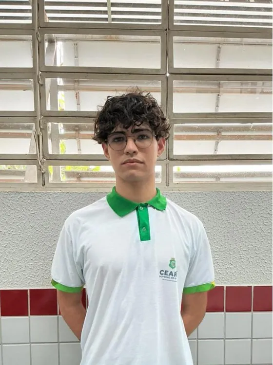
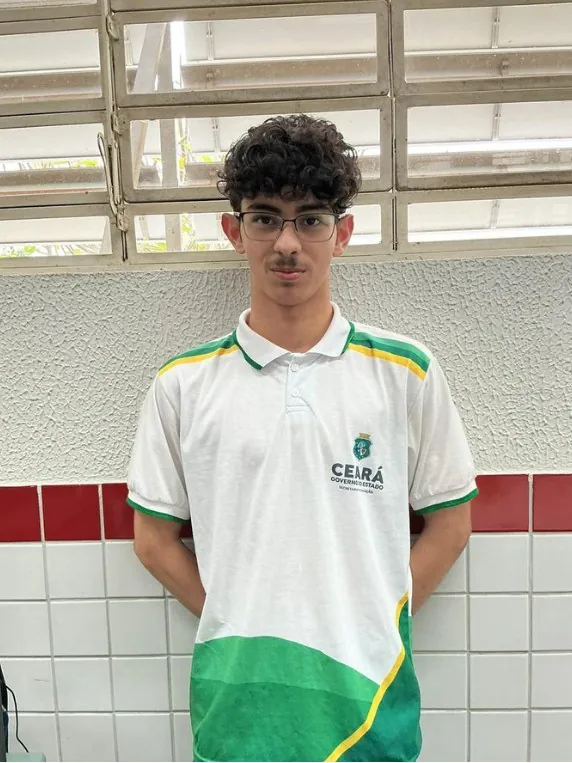
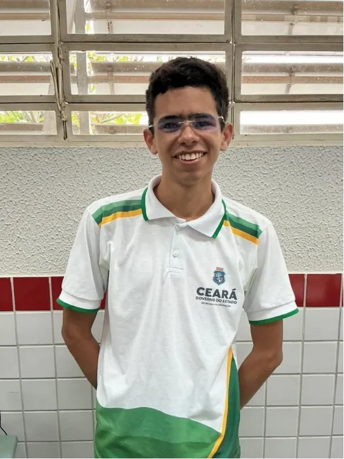
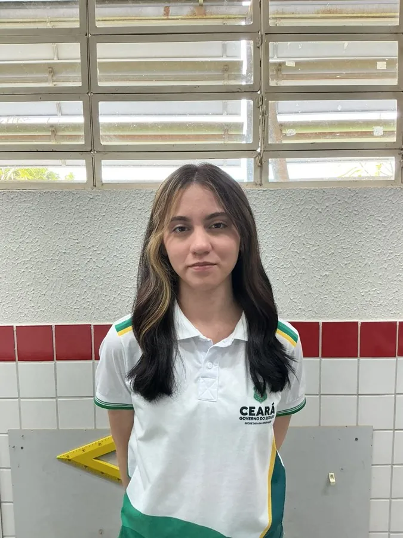
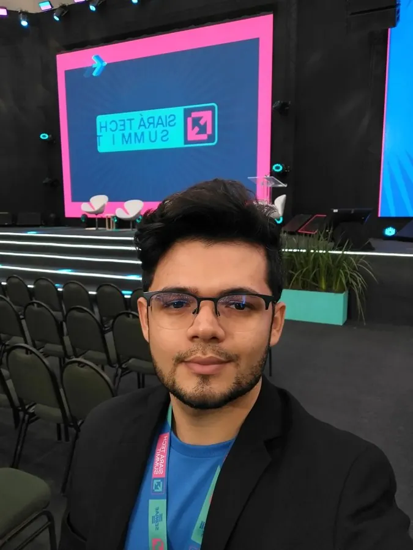
Empreendedorismo
Formação ampliada do Ver+ nas disciplinas de Gestão de Startup I, II e III.
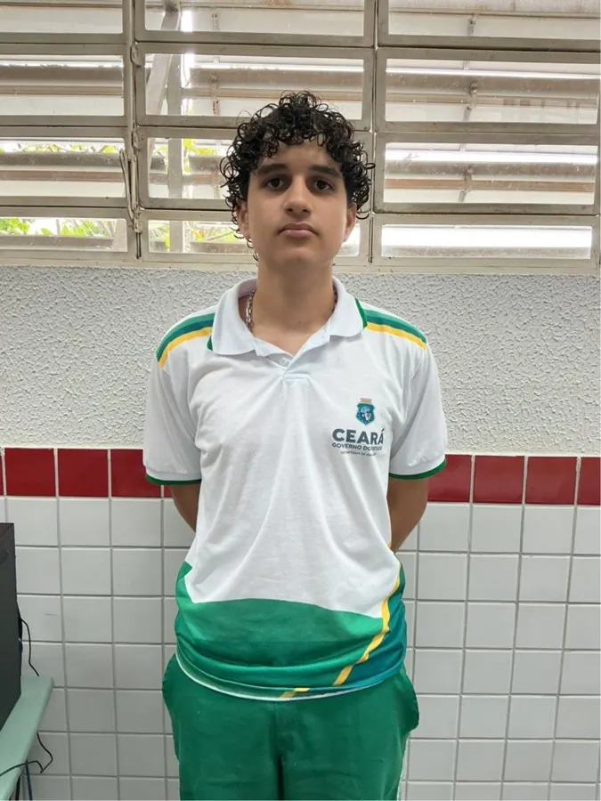
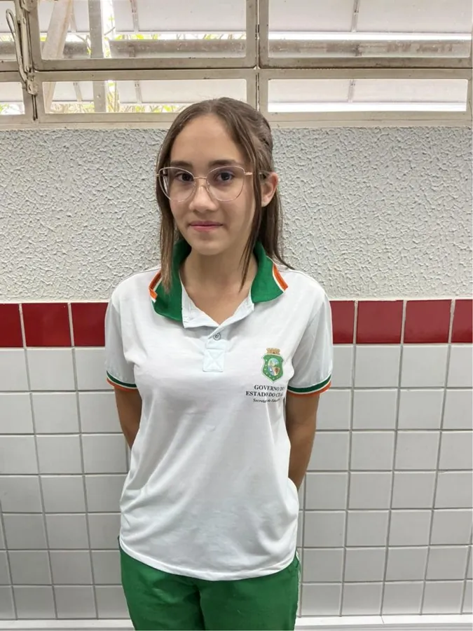
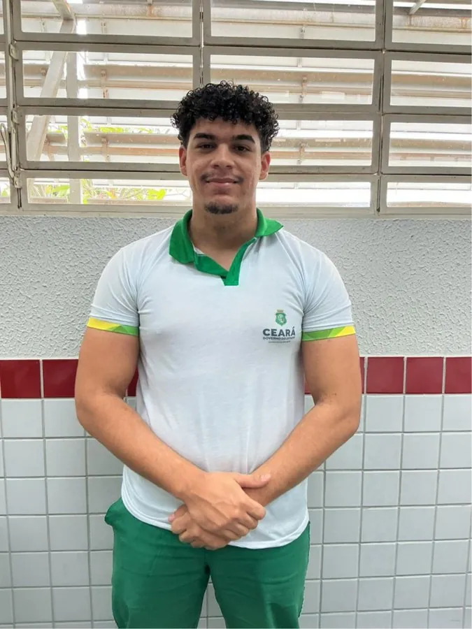
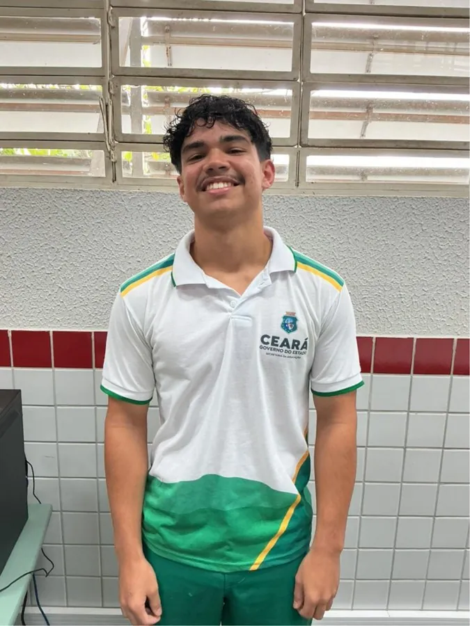
Caderno de campo
Navegue pelos registros reais do desenvolvimento do Ver+, das reuniões aos testes e à documentação.
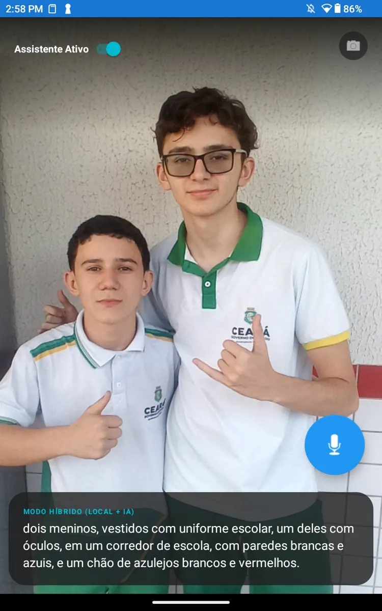
Use os botões anterior e próximo, as miniaturas ou as setas do teclado para mudar de registro.
Acompanhe o Ver+
Bastidores, testes, novidades e cada novo passo da nossa tecnologia assistiva.
O site Ver+ usa o Google Analytics para medir visitas e visualizações somente quando você permite. O Google recebe dados da página visitada, do navegador, do dispositivo e da origem da visita, podendo estimar a região do acesso. Cookies de estatísticas ajudam a distinguir visitas neste navegador. Não enviamos nomes, e-mails nem parâmetros dos endereços das páginas ao Analytics.
Você pode recusar ou retirar sua permissão pelo botão abaixo. A escolha fica salva neste navegador por até seis meses. Ao recusar, o site continua funcionando e o código de estatísticas não é carregado. A retirada vale para os próximos acessos e não apaga automaticamente dados já processados.
O responsável pelo site é o projeto Ver+. Para dúvidas sobre privacidade ou solicitações referentes aos seus dados, escreva para vermaismocicult@gmail.com. Saiba como o Google usa dados de sites parceiros e consulte a Política de Privacidade do Google.
Com sua permissão, usamos cookies do Google Analytics para contar visitas e visualizações e melhorar o site Ver+. Você pode recusar e continuar navegando. Saiba mais sobre privacidade.